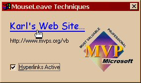

This sample provides a fully-functional usercontrol, that offers a number of
unique capabilities. The premise was to offer something that could be used
similar to a hyperlinked phrase or graphic on a webpage. The text or graphic
should be capable of rollover processing, such that as the mouse moves enters
its hotspot the link alters its appearance, and when the mouse exits the link
reverts to its original state. The problem was, Classic VB offered no MouseLeave
or MouseExit property we could use to restore state.
Quite a number of solutions have been proposed over the years. One very
common solution is to monitor MouseMove, and watch for what's under the cursor
until it's not the control of interest. That method is subject to error, as the
event doesn't always fire when the mouse is moved very quickly or focus is
switched to another application using Alt-Tab.
If you want to take it to the next level, and use a few APIs, you can call
SetCapture, then WindowFromPoint each time the MouseMove fires. Of course, this
is pretty useless if the control of interest is windowless like a Label. Windows
98 introduced the TrackMouseEvent API function, which has the same limitation of
only working with windowed controls.
The solution presented here avoids the window requirement, so that it
supports windowless conrols (like Image and Label) as well. And, no APIs are
even required, as VB's own drag-and-drop offers us the ability to create our own
MouseLeave event. The trick is to call a control's Drag method, telling it to
vbBeginDrag, from within its MouseMove event. At that point, the DragIcon kicks
in, allowing you to use the classic pointy-finger hand if you'd like. Complete
the effect by watching for the State parameter equal to vbLeave in the control's
DragOver event, and telling the Drag method to vbEndDrag in response. A more
complete description is offered in the August 1999 VBPJ article reference below,
but here's the gist of it:
Private Sub Form_Load()
' Important: This whole technique gets ugly
' if a custom DragIcon isn't assigned!
With Label1
.Caption = "http://vb.mvps.org/samples"
.DragIcon = Image1.Picture '<-- !!!
.Tag = Label1.Caption
End With
End Sub
Private Sub Label1_DragOver( _
Source As Control, X As Single, Y As Single, State As Integer)
' If the control is in dragmode, you can detect
' MouseLeave easily by observing the State parameter.
If State = vbLeave Then
' Thanks to Mike Bolser for this observation!
With Label1
.Drag vbEndDrag
.Font.Underline = False
.ForeColor = vbBlack
End With
End If
End Sub
Private Sub Label1_MouseMove( _
Button As Integer, Shift As Integer, X As Single, Y As Single)
' Entering dragmode on the first MouseMove allows
' easy detection of MouseLeave.
With Label1
.ForeColor = vbBlue
.Font.Underline = True
.Drag vbBeginDrag
End With
End Sub
When the user clicks while dragging, DragDrop fires. It's probably a good
idea to test the Source just to be sure something really whacky isn't going on.
Opening a web document is encapsulated within the HyperJump function, and is a simple matter of
calling ShellExecute passing the URL with the "open" verb. Reset the
Label control's inactive properties, as desired.
Private Sub Label1_DragDrop( _
Source As Control, X As Single, Y As Single)
' If the mouse is over the label, the control
' must be in drag mode. In this case, the
' DragDrop event occurs when the mouse is
' clicked by the user. Fire up the URL!
If Source Is Label1 Then
With Label1
Call HyperJump(.Tag)
.Font.Underline = False
.ForeColor = vbBlack
End With
End If
End Sub
Of course, these techniques add up to a fair bit of "pure VB" code
to include for what really ought to be very simple code! So I rolled the entire
thing up into an OCX, and compiled that with VB6. Supporting both
textual and graphical hyperlinks, this usercontrol is windowless (in hosts that
support that) and features a transparent background. Maintaining a transparent
background and tracking hits on the overlying text proved to be quite a
challenge, as this source demonstrates. I hope you find it useful.